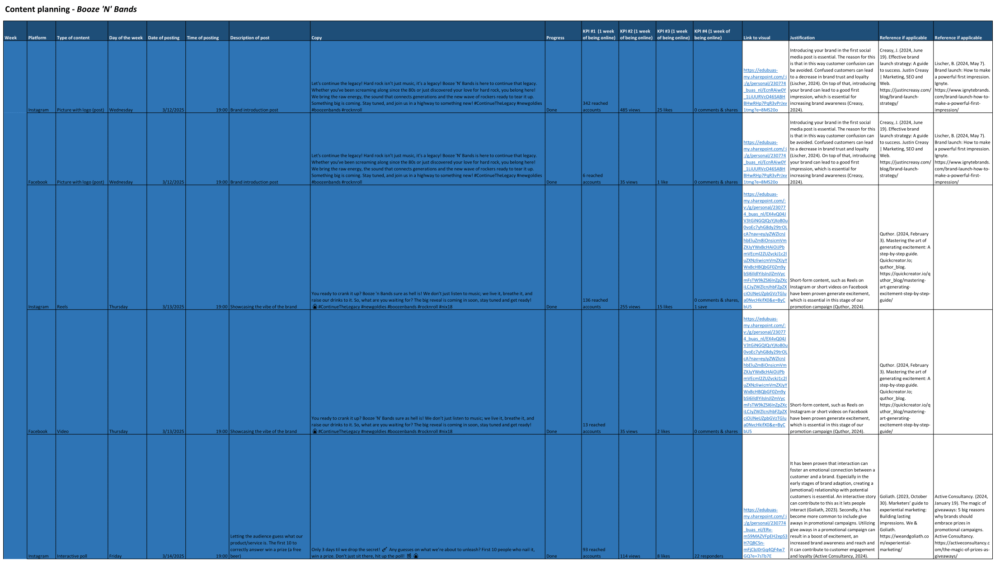
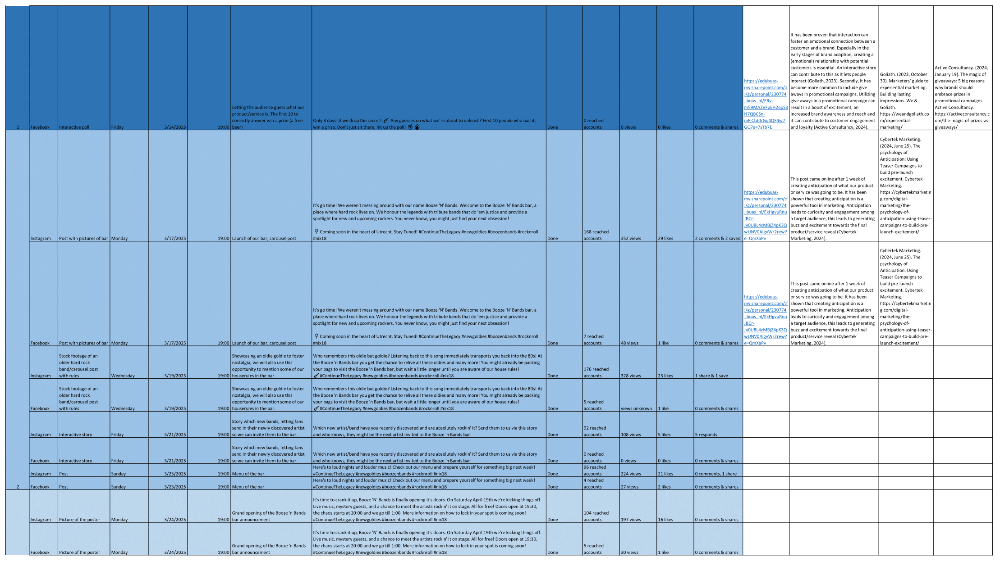
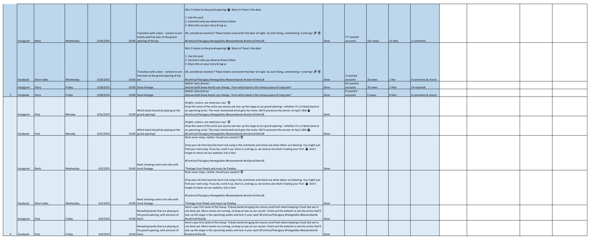

General Information
This branded website is publicly available at Booze N Bands Website
This website was created by:
- Ariana Ciju (230605)
- Mees de Guchteneire (230774)
- Lara van Erp (233563)
- Nicole Duarte Esser (232444)
Content
| # | Student ID | Value | Links |
|---|---|---|---|
| 1. | 230605 | Passion Thrives in Unity: Hard rock isn't just music, it's in our blood. Whether you were alive in the 80s 2or were coming to this world with their voices screaming in the background, it's in us somehow. You live it, breathe it, and share it with those who get it. Real rock never stands alone! | Passion Thrives in Unity |
| 2. | 230774 | Hard Rock Lives On: Hard rock started in rebellion, blasting through generations and still making noise today. We honour the legends who built it. Now, it's time to give new talent the chance to rise, keeping hard rock alive. As long as there’s a good rhythm and truth in the lyrics, hard rock will always find a highway to live on. | Hard Rock Lives On |
| 3. | 233563 | Empowerment Fuels Innovation: Keeping hard rock alive isn't just a mission, it's a duty. It's meant to be heard by the generations of now as well as those of the future. Upcoming artists live on in hard rock's future. Empowering those keeps hard rock loud, proud and unstoppable. | |
| 4. | 232444 | The Sound of Rock Ignites: Hard rock isn’t just sound, it’s an immersive experience. It hits you in the gut and doesn’t let go. It’s the wave of power, adrenaline, the feeling that you can take on the whole world. Everyone deserves the opportunity to experience real and live hard rock, whether you are alone or with others. We don’t just play rock or listen to rock, we experience it! |
Production
Design Elements
Justification of design elements.
-
Colour Scheme
- Main Color #2723B1 We chose this vivid shade of blue to convey both energy and authenticity. Blue is often associated with trust. The color is chosen to mirror the intensity of the music and the raw energy of live performances.
- Main Color #BF0000 Red is all about power and adrenaline. It embodies the burning passion and defiant spirit of hard rock, capturing the surge of energy that ignites during a live show. This color makes a bold statement, emphasizing the bar's commitment to delivering an unforgettable, high-octane experience.
- Main Color #26BF4C This sharp green provides a jolt of freshness against the darker palette, reflecting the rejuvenating energy new bands bring to the scene. It’s a statement color that says the bar isn’t afraid to break from tradition and spotlight emerging talent.
- Subcolor #0A092C This near-black hue conjures the mysterious, underground essence of classic rock venues. It adds a shadowy backdrop that heightens the drama, letting the brighter accent colors explode against its darkness.
- Subcolor #2723B1 This near-black hue conjures the mysterious, underground essence of classic rock venues. It adds a shadowy backdrop that heightens the drama, letting the brighter accent colors explode against its darkness.
- Subcolor #300000 A deeper green that amplifies the earthy grit of rock culture. Its subtle intensity grounds the design, embodying the raw, unpolished side of the genre while contrasting with the louder primary colors.
- Font choices: Grindy Brush (Grindy Brush was chosen for its raw, graffiti-inspired style that perfectly captures the edgy, rebellious spirit of hard rock) and Questrial Regular (Questrial Regular was chosen for its clean, modern readability that balances the raw energy of Grindy Brush.)
- User interface patterns (e.g. grids, carousels, menu organizations etc.)
- The structure of the navigation and content (e.g. how content units are distributed across pages)
- All these elements must be justified by referring to the theory and/or vocabulary of design
- Please relate these elements to other units, for example:
- How does website design fit the values and personality of the brand?
- How does website design fit the marketing and communication strategy?
- How does website design help showcase the unique value proposal of the product?
Credits
HTML template, the source code for UX patterns and images that were not produced by students are listed in this document:
One Drive Credits
Testing Report
- Testing Goals – We aimed to discover whether users could easily navigate the site’s pages, understand the brand’s hard rock identity, and complete booking or information-related tasks without confusion.
- Our Testing Methods
- The test’s participants – we will use the same participants (8 people) as in our first round of interviews, to make sure we continue with a linear evaluation.
- The test's setting – it will be done at each person's home, with the laptop open for use. Each session lasts 10–15 minutes, with questions done afterwards and if they want to, thoughts can be spoken during the testing.
- The test's protocol – Introduction: Provide a quick overview and the tasks to complete (without pre-interviews). Task Execution: Participants perform tasks while their screen interactions are observed and recorded. Feedback Collection: Immediately after each session, we ask the participants a series of questions that determine their experience.
- Testing Results
- Positive Aspects – Participants were able to locate key information quickly, and the site’s design resonated with its edgy, hard rock identity.
- Areas for Improvement – Some users experienced difficulty with the navigation menu and minor layout inconsistencies that caused brief confusion.
Marketing
Link to our One Drive Folder with all our marketing information.
Context of campaign and promotional activities
Explain the context of the campaign is (What the campaign is about, what the message is, which promotional activities were executed). In addition, present the objectives as mentioned in the Communication and Media Plan.
Explain and justify the chosen channels/platforms used and show there is a solid connection to the objectives established in the Communication and Media Plan.
Content Calender



Target Audience
Link to our documents about justifications target audience.
Link to our documents about our target audience.
Justifications of Aesthetics
Link to our documents about justficiations.
Learning Points
Through our social media journey, we've gained valuable insights about audience growth patterns. Initially, we anticipated steady, linear follower growth based on our early momentum. What we discovered instead was a natural curve where rapid initial growth gradually transitions to a more measured pace. This helps us set more realistic benchmarks for the future. Moving forward, we'll leverage this understanding to create more impactful content and engagement approaches that acknowledge the evolving nature of audience building.
Future Planning
Based on what we have learned through this already, we will recalculate our objectives. Looking at the initial campaign data, we can observe several key insights:
- Instagram significantly outperformed Facebook across all metrics (reach, views, engagement)
- Interactive content had moderate engagement but could be optimized
- Facebook reach remained consistently low throughout the campaign
- Our reels are too long, which does not keep the attention of our audience
Future Recommendations:
- Platform Strategy Refinement: Primary Focus on Instagram, Given the significantly higher engagement rates, allocate 70% of resources to Instagram and 30% to Facebook.
- Content Optimization: Video-First Approach, Increase video content from 25% to 50% of all posts, emphasizing authentic behind-the-scenes footage. User-Generated Content Initiative, use more creative hashtags because we use the same hastags in every post. We could partner with featured bands to co-create content before and after performances.
- Measurement and Analytics: Refined KPIs: Set more realistic growth targets based on logarithmic growth patterns. A/B Testing Schedule: Systematically test different posting times to optimize engagement. Conversion Tracking: Implement mechanisms to track social media influence on actual bar attendance
- Visual Identity Consistency: Our current posts lack a cohesive visual language, when you look at the feed. We should develop a clear set of visual guidelines including consistent color filters, typography treatments, and branded elements that make our content immediately recognizable even without seeing our logo.
Through our social media journey, we've gained valuable insights. Initially, we anticipated steady, linear follower growth based on our early momentum. What we discovered instead was a natural curve where rapid initial growth gradually transitions to a more measured pace. We've also learned that our reels are too long, which fails to maintain audience attention, and that interactive content has potential but needs optimization to fully engage our target audience. Facebook's consistently low reach across all content types indicates we should recalibrate our platform strategy to prioritize where our audience is most responsive.
Social Media
Link to our social media one drive.
Present and organize below all social media/online activities of the campaign. Context and material are according to the brand style, image, and vision. Images on the site are of high-quality, readable, and properly designed.

Management
Lean Canvas
First Version Paper:

Second Version:

Third Version Based on Feedback:

Problem
Our research and interviews indicate that the hard rock genre has significantly declined in mainstream prominence compared to previous decades. This diminished visibility negatively affects both fans and aspiring musicians. Specifically, emerging hard rock bands face difficulties in securing venues to showcase their talent, as venues are hesitant to book lesser-known or new artists. Consequently, the pipeline for new talent within the genre has stagnated, hindering the overall growth and vitality of hard rock music. Existing hard rock concerts, festivals, and events have become increasingly expensive, limiting accessibility for dedicated fans and further isolating the community from engaging fully with the music they love.
Solution
- An intimate, genre-specific bar dedicated exclusively to hard rock, creating a community-driven space for passionate fans to connect.
- Regular live performances offering aspiring artists an exclusive stage to showcase their music.
- Offering an authentic and immersive atmosphere aligned closely with the brand identity of celebrating and revitalizing the hard rock culture, distinguishing it from generic music venues.
Customer segments
- Age: Predominantly between 25 to 55 years old, with a core male audience. However, recent trends show an increase in younger female fans actively engaging with hard rock.
- Location: Primarily Utrecht-based, reflecting the local demand identified in our interviews. Dutch fans clearly indicated a desire for more dedicated hard rock venues within the Netherlands.
- Lifestyle: Passionate individuals who deeply value authenticity, personal expression, rebellion against norms, and genuine emotional connections. They actively participate in the live music scene, prioritizing experiences that reflect their identity.
- Behaviour: Social media savvy, frequently using Instagram and Facebook to stay updated on events, bands, and new music releases. They commonly discover new music through Spotify's algorithmic recommendations and rely on word-of-mouth within their community.
- Purchasing Habits: Regularly attend concerts and music events, investing primarily in tickets and physical music formats such as CDs and vinyl. They typically do not prioritize fashion merchandise, preferring purchases directly supporting their favourite artists’ music and performances.
Unique value proposition
A one-of-a-kind hard rock bar providing an authentic space for like-minded hard rock fans to connect in the modern world, offering an exclusive stage for upcoming bands and delivering the energy of live concerts without the high costs of major festivals.
Unfair advantage
- Focusing on single genre providing specialized experience.
- Loyal and passionate customers.
- Exclusive relationships with emerging hard rock bands.
Channels
Social Media: Using Instagram to visually showcase event highlights, behind-the-scenes footage, artist interactions, and engaging short-form content to attract younger fans. Facebook is employed for detailed event announcements, fostering online communities through groups, driving discussions, and connecting more deeply with our slightly older audience segment. Both platforms are key for fan interaction, building excitement, and maintaining regular communication with our audience.
Key metrics
- Number of live shows per month.
- Attendance rates per event.
- Bar revenue per event.
- Merchandise sales volume.
- Social media engagement.
- Customer satisfaction and feedback scores.
Revenue streams
- Our revenue streams will primarily include drink sales generated through our bar offerings, ensuring steady income during events and regular business hours.
- Additional income will come from merchandise sales, sourced directly from the performing bands, allowing fans to support artists and providing a supplementary revenue channel.
- Finally, occasional ticket sales for exclusive, high-profile guest performances.
Cost structure
- Fixed Costs: Venue rental and maintenance, Staff salaries, Licensing and permits, Equipment maintenance.
- Variable Costs: Artist fees, Merchandise production, Drink supplies, Marketing and promotion, Event-specific logistics.
- Occasional Costs: Special guest accommodations, Event decor and stage design.
Unique Value Proposition
A unique hard rock bar offering an authentic space for fans to connect, featuring exclusive performances by upcoming bands. Experience the energy of live concerts without major festival prices.
Validation of Assumptions
We first conducted a brainstorming session to create our brand name, during which we quickly recognized that our initial ideas were too stereotypical and did not accurately represent the authentic spirit of hard rock. Early suggestions such as "Stairway Suites," "Highway to Rest," "Bohemian Haven," and "The Rolling Stays" drew too heavily from famous rock bands, reinforcing clichés rather than originality.
To improve our approach, we began conducting research on search engines into the essential qualities of hard rock music to help guide our naming process. Despite this, many subsequent ideas, like "The Blackout," "Inferno Suites," "The Shadow Chord," "Grindstone Rock," "The Phantom Riff," "The Backstage," and "The SoundStay," still felt overly predictable or niche-specific, highlighting our limited experience with the genre.
Seeking external input, we reached out on Reddit for perspectives from dedicated hard rock fans. While these insights were informative about our audience needs, they did not directly yield usable name ideas. However, a spontaneous interaction within our group, inspired by a playful name of our WhatsApp chat "Rock 'n Roll Baby," sparked interest in using " 'n' " between two key thematic words.
After numerous attempts, Ariana suggested "Booze" to reflect the bar and music event concept we envisioned, and Lara then added "Bands" to signify the music element. Initially, "Booze 'N' Bands" received mixed reactions, but upon further reflection and after repeated use, the name resonated and was ultimately chosen.
Regarding our trademark design, we created a mood board focusing on a rugged aesthetic with either a hand-brushed or spray-painted font style.

Although we explored available fonts in Adobe Illustrator, none captured our intended visual identity. Consequently, Nicole, who has expertise in Adobe Illustrator, created a custom hand-drawn font that perfectly aligned with our original vision: a rough, authentic style with each word positioned on separate lines.


Additionally, we experimented with creative touches such as incorporating lightning imagery or stylizing the "Z" in "Booze," but ultimately decided to maintain uniformity and consistency in colour and style throughout the design.


Appendix
Please use the list below to provide links to evidence for all parts of your justication. Please double-check all links before delivering the website. Do not hesitate to refer to these numbers above.